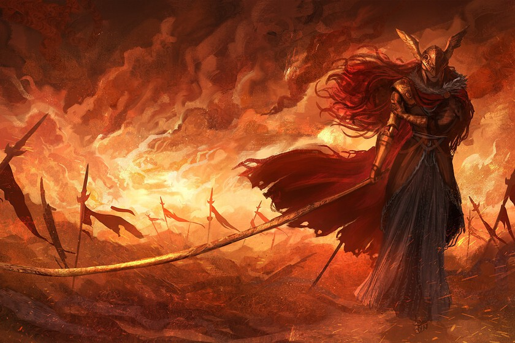

Malenia fue castigada con la Putrefacción Roja, una plaga divina que consume su cuerpo desde el interior.
A causa de la enfermedad, perdió varias de sus extremidades (piernas y un brazo) y la vista, utilizando prótesis metálicas avanzadas diseñadas por Miquella.
Conserva únicamente su brazo izquierdo biológico.
Prueba clear